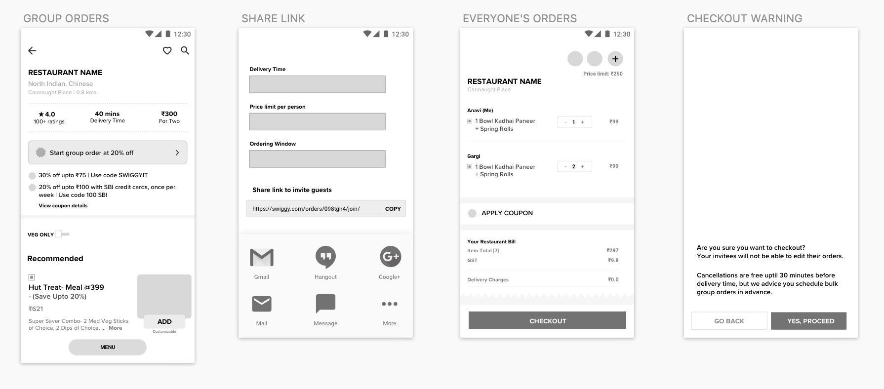

With the newfound need for learning online, teachers and students are adapting to the tools at hand. Teaching online comes with its separate set of issues and schools have recently faced the need to re-skill their education staff.
A Learning System at hand that helps in taking an overview of the classes, and provides teachers methods to compensate for real- time insights.
I believe there is a massive disconnect between teachers and students, and also amongst teachers themselves.
It was time to interview teachers, students and parents to understand use cases and implications. During the interviews, I asked questions like-
Based on my research, I feel confident that there is a recognizable amount of gap that needs to be mended for conscious teaching. Teachers are now expected to be more creative, interesting even, and judicious with the time.
Help teachers get an overview of attendance by the net time any student attends their classes.
The solution should be seamless and easy to use.
For quick projects, it is important to have a mind map because it allows me to lay down possibilities and considerations while understanding a problem statement. This helps me to refer back to the thoughts I had during secondary research.

For me, it is important to list characteristics of a persona because it allows me to bring the target user on the journey of designing a solution. This way, I can be sure that I am not stereotyping a teacher. This might look like a job description, but it helped me build a picture of what is on their minds.
After understanding the users & problems deeper, I wrote down areas to focus on to help me think of different ways that could help teachers. I also went through multiple revisions of different "How Might We" questions to help me have a clear understanding of the problem I was solving.

To get out of the quick ideation mindset I write down 'Things to consider.' When I break the idea down and question its value, I can often find small issues that need to be addressed. Here are a few of those thoughts.
The teacher should have informed insights of their students’ interest and performance. If something is found lacking, a problem identification meeting can be organised with parents and the counselor. Not only will this allow for teachers to track the students with varied needs, but also the tracking of attendance, which is a pain to track manually.
Effort & time is required for browsing through tons of reference books to find relevant and innovative teaching methods. As a teacher, it would help if I could check how a concept is taught by the best instructors. With better teaching methods, time will not be wasted online on incomprehensive reading from textbooks. This can be replaced with intentional doubt- reducing sessions or quick quizzes once the kids are done reading the lesson once by themselves. Not only will this help us talk about what really matters in a classroom, it will help reduce our screen-times.
Whatsapp is being largely used to form groups of students with subject teachers and share assignment requirements. The PDFs with answers are shared over individual chat for discretion. The lack of grouping chats in Whatsapp by purpose can make this experience quite chaotic. The teachers don’t have the time or the patience to compile the work and check, and they miss out on annotating every answer script.
During sketching, I was able to explore potential layouts and user flows for introducing the group order functionality. I determined that there should be two user flows in this feature, for the host and for the invitee- with some restrictions.

Once I explored different ideas, I wanted to test this idea with interviewed teachers. I did some qualitative testing with a few screens to test some variations. I then mocked up screens in Sketch to build my prototype in XD.
The main usability issue that I found was that students will have issues ordering in advance, and there will be delays in individual payments.
To help with singular payments and easy money splitting, Swiggy payments could be done directly with Swiggy money for instant payments. If an invitee is perchance not a user of Swiggy, the Swiggy amount could be requested via Google Pay or Splitwise. This would allow the users to manage the payment post get-together as well.
After making some changes to the design based on testing, I presented my prototypes to Swiggy users and got the following responses:
Laying out the user journey map enables me to see the big picture. As I build a journey map, I like to focus on potential opportunities.

This solution will give the user the flexibility to organise the menu in advance with the help of users, manage payments, and have extra paid add-ons with the menu.
She selects a restaurant after much ado and sees that there are promotional offers on group order. She browses the menu and proceeds for group order.

She makes changes to the order according to her requirements. She decides to pay for the farewell herself and get it reimbursed. She sets an order limit per person to help manage the budget.
I had a great experience while working on this project, it brought my school days back to me.
The amount of research that was done by me was quite limited because of lack of time. There is a lot more scope for research and usability testing, which I will update soon.
{kind=link}